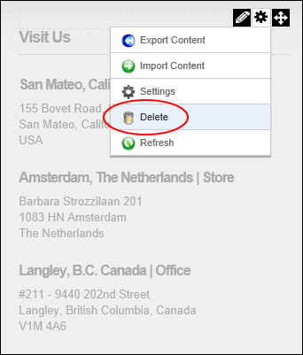

Deleting a Module
How to delete a module from a page.
Tip: Deleted modules are stored in the Recycle Bin.
- Mouse over the Manage
 button on the module action menu.
button on the module action menu.
- Select
 Delete from drop down list. This displays the message "Are You Sure You Wish To Delete This Module?"
Delete from drop down list. This displays the message "Are You Sure You Wish To Delete This Module?"

-
-
See "Delete a Module from Secondary Language"
-
See "Restoring Deleted Modules"